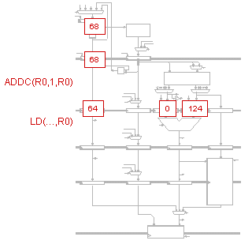

Pipelined Beta
Problem 1.
Beta quickies.
-
 In a 5-stage pipelined Beta, when does the hardware use its
ability to insert NOP into the instruction stream at the IF stage
(using the MUX controlled by AnnulIF)?
In a 5-stage pipelined Beta, when does the hardware use its
ability to insert NOP into the instruction stream at the IF stage
(using the MUX controlled by AnnulIF)?
-
In a 5-stage pipelined Beta, when does the hardware use its
ability to insert a NOP into the instruction stream at the ALU stage
(using the MUX controlled by AnnulALU)?
-
Ben Bitdiddle is thinking about modifying a 5-stage pipelined
Beta to add a "Jump if Memory Zero" instruction (JMZ) that fetches
the contents of a memory location and jumps if the fetched value
is zero. How many branch delay slots would follow a JMZ instruction
in the modified 5-stage pipelined Beta?
-
Suppose the following code were running on a Beta implementation
with a 5-stage pipeline, full bypassing and 1 branch delay slot with
annulment.
PUSH (R1)
PUSH (R2)
LD (BP, -12, R0)
LD (BP, -16, R1)
CMPEQ (R0, R1, R2)
BT (R2, L1)
When the CMPEQ is executed, assuming no interrupts, where does the
value for R0 come from? How about the value for R1? (The choices
would be from the register file or bypassed from one of the pipeline
stages.)
-
Which of the following pipeline hazards cannot be dealt with
transparently and at no performance cost by bypassing?
- A shared register between consecutive ALU instructions.
- A BR followed by an ALU instruction using the BR.
- An LD followed by an ALU instruction using the LD.
- Access to LP by the first instruction in a called procedure.
- Access to XP by the first instruction in an interrupt handler.
-
The number of branch delay slots reflects
- The distance between the instruction fetch stage and the stage at which the branch decision is made.
- The distance between the writeback stage and the stage at which the branch decision is made.
- The total length of the pipeline.
- The position within the pipeline of the instruction fetch stage.
- The number of cycles required for a fetch from data memory.
Problem 2.
A common method for communicating with input and
output devices is to assign them to one or more memory addresses. This
technique is called memory-mapped I/O. Some I/O locations are used to
address status words that indicate the availability of an associated
I/O device. These status words indicate if an input device has new
input information available, or if an output device has processed its
previous output request. Often, computers will execute tight loops
waiting for the status of an I/O device. Consider the following
instruction sequence for checking the status of an external I/O
device.
loop: LD(R31, status, R0)
BEQ(R0, loop, R31)
ADD (R0, R1, R2)
The following pipeline diagram illustrates the execution of this
instruction sequence on a standard 5-stage pipelined Beta:.
-
How many clock cycles does it take to execute one iteration of the
2-instruction loop given?
-
What aspect of the instruction sequence causes NOP1 to be
inserted into the pipeline?
-
What aspect of the instruction sequence causes NOP2 to be
inserted into the pipeline?
-
What aspect of the instruction sequence causes NOP3 to be
inserted into the pipeline?
-
In a non-standard version of the 5-stage pipelined Beta,
where the instruction following a branch is not annulled, which of
the following statements would be true?
- The ADD instruction would be executed each time through the loop.
- The loop would still take 5 cycles to execute
- The value of the register R0 that is tested by the BEQ instruction comes from a by-pass path
- The value of the register R0 that is accessed by the ADD instruction comes from the register file.
Problem 3.
The 5-stage pipelined Beta (as shown in lecture) is executing the
sequence
ADD(R31,R31,R31) | NOP
ADD(R1,R2,R1)
LD(R1,4,R1)
SUB(R1,R5,R6)
ORC(R1,123,R1)
SHL(R1,R1,R1)
-
Which input is selected by the Ra bypass MUX when the ADD instruction
is in the ALU stage?
-
Which input is selected by the Ra bypass MUX when the LD instruction
is in the WB stage?
Problem 4.
Each of the following scenarios shows a snapshot
of a 5-stage Beta executing a sample code sequence. For each scenario,
indicate the appropriate settings for the bypass muxes, the IR muxes,
and the IR/ALU regs load enable signals. Then draw another snapshot
showing the state of the 5-stage Beta on the following cycle.
-
Scenario 1: assume R2 contains 25
. = 0x200
ADDC(R31,10,R0)
ADD(R2,R0,R1)
CMPLE(R0,R1,R2)
BT(R2,Loop,R31)
-
Scenario 2: assume R1 contains 10, R2 contains 60
. = 0x100
LOOP: ADD(R1,R2,R3)
CMPLEC(R3,100,R0)
BT(R0,Loop,R31)
SHLC(R3,1,R3)

-
Scenario 3: (show 3 cycles of snapshot) assume Mem[124] contains 42
. = 0x60
LD(R31,124,R0)
ADDC(R0,1,R0)
ST(R0,124,R31)

-
Scenario 4: Show what happens when LD gets a MEMORY FAULT and
is aborted in the MEM pipeline stage.
. = 0x60
LD(R31,-1,R0)
ADDC(R0,1,R0)
-
Scenario 5: (show 3 cycles of snapshot) Show what happens when
an interrupt occurs when the Beta is fetching the SUB instruction.
Assume the hardware sets PCIF to 0 when taking an
interrupt.
. = 0x100 . = 0x0
ADD(...) IHANDLER: ADDC(SP,4,SP) | PUSH(XP)
MUL(...) ST(XP,-4,SP)
SUB(...) | Interrupt here ...

Problem 5.
Consider execution of the following code sequence on our pipelined Beta processor:
ADDC(R31, 3, R0)
SUBC(R0, 1, R1)
MUL(R0, R1, R2)
XOR(R0, R2, R3)
ST(R3, 0x1000, R31)
-
What value gets stored into location 0x1000?
-
At what point during the execution of the above sequence is data
bypassed from the Memory stage to the ASEL or BSEL input multiplexors?
-
The above sequence is executed on a faulty Beta, whose only problem is
that data bypassed from the WB stage is always presented to the ASEL
and BSEL multiplexors as zero. What value will be written into memory
location 0x1000 using this faulty Beta?
-
Now the same sequence is executed on a different faulty Beta. In
this case, all data read from the register file on either port reads
as zero. What value will the above sequence write into memory
location 0x1000 using this processor?
Problem 6.
Flaky Betas Inc.'s purchasing agent, Penny Pincher, has acquired a
large number of 5-stage pipelined Betas with full bypass and 1
annulled branch delay slot (the FB3). These processors have a single
flaw: the connection of the PC inputs to the WDSEL multiplexor is
defective. Penny is proud of the deal she made, but the FBI software
team points out that procedure calls are broken since the write to the
LP register uses the broken path.
After a moment's thought, Penny proposes that a call to a nearby
procedure f, rather than generating a BR(f,LP)be compiled as:
LDR(.+8,LP)
BR(f,r31)
LONG(.+4)
-
Which of the following is the best statement about Penny's scheme?
- it works
- it will work only if the return sequence from a procedure is
modified to add 4 to the value of LP before executing a JMP(LP) to
return to the caller
- doesn't work since the LDR instruction is also broken by the flaw
in the FB3's data path
- only works if the program is placed in the bottom 32767 words of
main memory.
- doesn't work
-
Whether Penny's proposed scheme works or not, the software team
doesn't like it and demands another solution. Penny remembers that
all of the bypass paths in the Beta design are still operational
except for the one at the last (write back) stage.
On a procedure call, during the cycle in which the first
instruction of the called procedure is in the RF pipeline stage, where
in the 5-stage Beta pipeline is the return address?
-
Assuming that all procedures are compiled with a standard entry
and exit code sequence and that we don't need to worry about
interrupts, does the fact that the bypass paths still work help Penny
generate another solution?
Problem 7.
Pipelines-R-Us, a processor-design consulting firm located in the
Valley, has submitted the following proposal to the 6.004 staff. They
have noticed that the MEMORY stage of the five-stage pipelined Beta
isn't used except during load and store operations. They propose
omitting that stage entirely whenever the memory isn't used, as
illustrated by the following table showing how an instruction travels
through the various pipeline stages in succeeding cycles:
P-R-U reasons that instructions that leave out the MEM stage can
complete a cycle earlier and thus most programs will run 20% faster!
In your answers below assume that both the original and the P-R-U
pipelined implementations are fully bypassed.
-
Explain briefly to P-R-U why decreasing the latency of a single
instruction does not necessarily have an impact on the throughput of
the processor. Hint: consider how long it would take the original
pipelined Beta to complete a sequence of 1000 ADDs. Then compare that
with how long a P-R-U-modified Beta would take to complete the same
sequence.
-
Consider a sequence of alternating LD and ADD instructions. Assuming
that the LD instructions use different source and destination
registers than the ADD instructions (i.e., there are no stalls
introduced due to data dependencies), what is the instruction
completion rate of the original, unmodified 5-stage Beta pipeline?
-
Now show how the same sequence of instructions will perform on a
processor modified as P-R-U has suggested. Assume that the hardware
will stall an instruction if it requires a pipeline stage that is
currently being used by a previous instruction. For example, if two
instructions both want to use the WB pipeline stage in the same cycle,
the instruction that started later will be forced to wait a cycle.
Draw a pipeline diagram showing where the stalls need to be introduced
to prevent pipe stage conflicts.
-
Did P-R-U's idea improve performance? Why or why not?
Problem 8.
Bargain Betas, Inc specializes in selling slightly defective Beta
processors to budget-minded customers who are willing to program
around the defects. BBI has acquired rights to the design of the
Buba, a slightly defective version of the 5-stage pipelined Beta from
lecture. The Buba differs only in its having no bypass logic or
branch delay slot annulling.
You try running three little test sequences on the Buba, starting
in each case with R1= -1, R2 = 1, R3 = 5, and R4 = -1:
S1: ADD(R1, R2, R3)
SUB(R2, R3, R4)
CMPLT(R3, R4, R5)
S2: ADD(R1, R2, R3)
NOP
SUB(R2, R3, R4)
NOP
CMPLT(R3, R4, R5)
S3: ADD(R1, R2, R3)
NOP
SUB(R2, R3, R4)
CMPLT(R3, R4, R5)
-
For each of the above sequences, give the value to be found in R5 (i)
after execution on a working Beta and (ii) after execution on a Buba.
Explain your answers.
-
Describe how to add minimal bypass logic to the Buba so that the
correct value will be left in R5 after the completion of sequence S2.
-
Describe what bypass paths are necessary to get the correct results in
all three cases.
-
Add the minimal number of NOPs necessary to the following instructions
to make it produce identical results on the Buba and a normal Beta:
ADD(R3, R4, R5)
SUB(R5, R6, R7)
ADD(R1, R2, R3)
MUL(R7, R1, R2)
ADD(R4, R3, R5)
CMPLE(R7, R8, R9)
DIV(R7, R8, R10)
BEQ(R5, done)
ADDC(R1, 1, R5)
Problem 9.
This problem concerns the effect of external interrupts on the 5-stage
pipelined Beta with bypass paths and 1 branch delay slot with
annulment (i.e., the instruction in the delay slot is not executed).
Recall that if an external interrupt arrives in cycle I, then the
address of the interrupt handler, XAdr, is loaded into the PC at the
end of cycle I and that the instruction that occupied the IF stage
during cycle I gets replaced with BNE(R31,XAdr,XP). Assume that these
are the first lines of the interrupt handler:
XAdr: ADDC(SP,4,SP)
ST(R0,-4,SP)
...
First, consider this code fragment:
. = 0x1234
start: CMPLTC(R1,0,R2)
SUB(R3,R2,R3)
XOR(R0,R3,R0)
MUL(R1,R2,R3)
SHLC(R1,2,R4)
-
Complete the following pipeline diagram for normal execution of those
instructions (i.e., no interrupts are asserted).

-
Complete the following pipeline diagram assuming that an interrupt
arrives in cycle t2. What value is saved in XP as the result of the
interrupt? Where should the interrupt handler return to when it
finishes? Why doesn't it just return to the instruction whose address
is saved in XP?
-
Now consider what happens when we include a branch in the instruction
sequence:
skip: BR(NEXT)
CMPLTC(R1,0,R2)
ADD(R3,R2,R3)
next: XOR(R0,R3,R0)
MUL(R1,R2,R3)
SHLC(R1,2,R4)
Complete the diagram for normal execution of the instructions starting
at skip.

-
Complete the diagram assuming that an interrupt arrives in cycle t2.
To what instruction will the handler return when it is finished? Why
is this a problem?
-
Normally interrupts are handled on the cycle on which they arrive,
i.e., the instruction in the IF stage is discarded and a branch is
forced to location Xadr. Suppose the hardware could be changed so
that in some cases interrupts weren't handled on the cycle in which
they arrived. In particular, suppose that interrupts were not allowed
to occur when annulling an instruction in a branch delay slot.
Explain how this solves the problem observed in part (D).
-
Suppose interrupts are not allowed to occur when annulling an
instruction in a branch delay slot. Will the following program create
a loop that can't be interrupted?
X: BR(Y)
Y: BR(X)